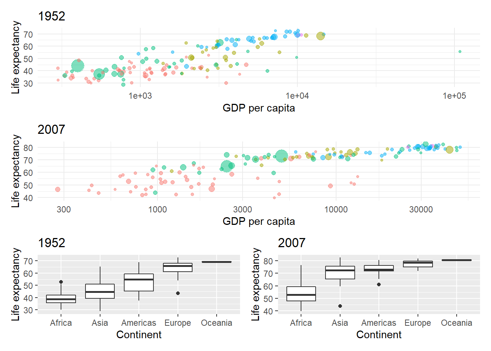

5 Extras
This extra chapter introduces:
- Using pseudocode before writing your actual code
- Writing your own functions
- Working with excel spreadsheets
- Using
patchworkto combine plots
5.1 Pseudocode
Pseudocode is the idea that we write down the steps of what we want to do in plain language to help us think about the actual code syntax we need to write.
For example, with the Portal surveys data we had a table with observations for several plot types in, but we were only interested in the control and long-term kangaroo rat exclosure plots.
So that step in pseudocode is:
I want make a table with only the observations for control and long-term kangaroo rat exclosure from the survey data.
In steps:
- Pipe the
surveystable to the filter function. - Pass arguments to the filter function to filter for observations equal to the control plot type or observations equal to the long-term kangaroo rat exclosure plot type.
In R code this becomes:
## # A tibble: 20,729 x 13
## record_id month day year plot_id species_id sex hindfoot_length weight
## <dbl> <dbl> <dbl> <dbl> <dbl> <chr> <chr> <dbl> <dbl>
## 1 1 7 16 1977 2 NL M 32 NA
## 2 72 8 19 1977 2 NL M 31 NA
## 3 224 9 13 1977 2 NL <NA> NA NA
## 4 266 10 16 1977 2 NL <NA> NA NA
## 5 349 11 12 1977 2 NL <NA> NA NA
## 6 363 11 12 1977 2 NL <NA> NA NA
## 7 435 12 10 1977 2 NL <NA> NA NA
## 8 506 1 8 1978 2 NL <NA> NA NA
## 9 588 2 18 1978 2 NL M NA 218
## 10 661 3 11 1978 2 NL <NA> NA NA
## # … with 20,719 more rows, and 4 more variables: genus <chr>, species <chr>,
## # taxa <chr>, plot_type <chr>It can take a while and some research to figure out how to translate pseudocode to R code, and there is often more than one way to acheive the same result, but the point of the pseudocode is that it forces us to be specific about what we want to do. You may even have to re-write the pseudocode several times or talk to someone else to refine the question and then steps required to answer it.
The same approach can be used in many other areas of problem solving, such as experimental design.
5.2 Functions
Functions are objects, and comprise of three parts:
- Name : short, but meaningful is advised
- Arguments: the inputs to the function
- Body: the code that does something with the arguments to create an output.
The body will generally use other functions, strung together to create our new function.
Let’s illustrate this by creating a function to simulate rolling a pair of dice, as per Hands on Programming with R
First we write some code that will become our function:
# Assign the numbers to a die
die <- 1:6
# Sample the die numbers twice
dice <- sample(die, size = 2, replace = TRUE)
# Add them together
sum(dice)## [1] 4Now we put those elements as the body of a function, and assign it to a function
called roll with no arguments:
# Roll two dice function
roll <- function(){
die <- 1:6
dice <- sample(die, size = 2, replace = TRUE)
sum(dice)
}What about doing this for a die of any number of sides?

We remove the die object from the body of the function and turn it into an
argument that can take a sequence of integer values. Here we provide a default
of 1 to 6. It’s good practice to supply a default argument.
# Roll two dice of any size
roll_n <- function(die = 1:6) {
dice <- sample(die, size = 2, replace = TRUE)
sum(dice)
}
5.3 Working with Excel spreadsheets
5.3.1 Gapminder
The Gapminder Foundation:
The mission of Gapminder Foundation is to fight devastating ignorance with a fact-based worldview that everyone can understand.
For example, the famously created aa bubble chart of the life expectancy vs. income around the world.
All sorts of data is available on their website and can be downloaded in various formats. Here we have a set of data for income, and life expectancy in countries around the world recorded between 1952 and 2007. (This version of gapminder data originated from Tidyverse Booster, Hadley Wickham.)
# Download the gapminder data
download.file("https://github.com/ab604/ab604.github.io/raw/master/docs/gapminder.zip",
destfile = "gapminder.zip")
# Unzip the the gapminder data
unzip("gapminder.zip")There should now be a gapminder directory in your working directory containing
a folder of csv files and excel files. These contain the same data, but split in
various ways: by country, by year or by continent.
We’re going to work with the excel data, where the data is split across multiple sheets in the same file.
5.3.2 readxl package
We’ll be using tidyverse package readxl for importing the excel data.
In other words, the default is to read the first sheet(tab) in the specified workbook. If your workbook is a little more complicated than this, you can crack it open and list the sheet names with the following excel_sheets function:
For example, lets look at the sheets in gapminder-country.xlsx :
## [1] "Afghanistan" "Albania"
## [3] "Algeria" "Angola"
## [5] "Argentina" "Australia"
## [7] "Austria" "Bahrain"
## [9] "Bangladesh" "Belgium"
## [11] "Benin" "Bolivia"
## [13] "Bosnia and Herzegovina" "Botswana"
## [15] "Brazil" "Bulgaria"
## [17] "Burkina Faso" "Burundi"
## [19] "Cambodia" "Cameroon"
## [21] "Canada" "Central African Republic"
## [23] "Chad" "Chile"
## [25] "China" "Colombia"
## [27] "Comoros" "Congo, Dem. Rep."
## [29] "Congo, Rep." "Costa Rica"
## [31] "Cote d'Ivoire" "Croatia"
## [33] "Cuba" "Czech Republic"
## [35] "Denmark" "Djibouti"
## [37] "Dominican Republic" "Ecuador"
## [39] "Egypt" "El Salvador"
## [41] "Equatorial Guinea" "Eritrea"
## [43] "Ethiopia" "Finland"
## [45] "France" "Gabon"
## [47] "Gambia" "Germany"
## [49] "Ghana" "Greece"
## [51] "Guatemala" "Guinea"
## [53] "Guinea-Bissau" "Haiti"
## [55] "Honduras" "Hong Kong, China"
## [57] "Hungary" "Iceland"
## [59] "India" "Indonesia"
## [61] "Iran" "Iraq"
## [63] "Ireland" "Israel"
## [65] "Italy" "Jamaica"
## [67] "Japan" "Jordan"
## [69] "Kenya" "Korea, Dem. Rep."
## [71] "Korea, Rep." "Kuwait"
## [73] "Lebanon" "Lesotho"
## [75] "Liberia" "Libya"
## [77] "Madagascar" "Malawi"
## [79] "Malaysia" "Mali"
## [81] "Mauritania" "Mauritius"
## [83] "Mexico" "Mongolia"
## [85] "Montenegro" "Morocco"
## [87] "Mozambique" "Myanmar"
## [89] "Namibia" "Nepal"
## [91] "Netherlands" "New Zealand"
## [93] "Nicaragua" "Niger"
## [95] "Nigeria" "Norway"
## [97] "Oman" "Pakistan"
## [99] "Panama" "Paraguay"
## [101] "Peru" "Philippines"
## [103] "Poland" "Portugal"
## [105] "Puerto Rico" "Reunion"
## [107] "Romania" "Rwanda"
## [109] "Sao Tome and Principe" "Saudi Arabia"
## [111] "Senegal" "Serbia"
## [113] "Sierra Leone" "Singapore"
## [115] "Slovak Republic" "Slovenia"
## [117] "Somalia" "South Africa"
## [119] "Spain" "Sri Lanka"
## [121] "Sudan" "Swaziland"
## [123] "Sweden" "Switzerland"
## [125] "Syria" "Taiwan"
## [127] "Tanzania" "Thailand"
## [129] "Togo" "Trinidad and Tobago"
## [131] "Tunisia" "Turkey"
## [133] "Uganda" "United Kingdom"
## [135] "United States" "Uruguay"
## [137] "Venezuela" "Vietnam"
## [139] "West Bank and Gaza" "Yemen, Rep."
## [141] "Zambia" "Zimbabwe"References to sheet names are direct and therefore do require quotes:
For example let’s load just the United Kingdom sheet and assign it to uk_dat:
Sheet indexing starts at 1, so alternatively, you could load in the third tab in with the following code:
In the read_excel function, if the col_names argument is left to its default value of TRUE, you will import the first line of the worksheet as the header names. In line with tibble and tidyverse standards, the readxl column header names are formed exactly as they were written in Excel.
Alternatively, if you wish to skip using header specified column-names and instead “number columns sequentially from X1 to XN”, then set this argument to false: i.e. col_names = FALSE
For example, if you want to set a three column excel sheet to contain the data as dates in the first column, characters in the second, and numeric values in the third, you would need the following lines of code:
For the final of the most useful additional arguments available in read_excel, if you wish to skip rows before setting column names, there is the skip argument. This works exceptionally well for dealing with those intricately crafted database reports you enjoy so much.
Let’s say, for example, those daily reports you receive with a lovely logo, five rows of report generation details, and the column headers in the sixth row. Getting this imported quickly and tidily into R requires only the following code:
5.4 Map functions
Let’s think about how we might read a number of excel sheets into a single data frame. We met map functions in Chapter 3.
Map functions allow us to iterate an operation:
The map functions transform their input by applying a function to each element and returning a vector the same length as the input.
There are lots of examples of using them in R4DS map functions.
Let’s state the problem in pseudocode terms. The gapminder year spreadsheet contains a sheet for every year between 1952 and 2007 recording life expectancy, population, country and continent:
We’d like to read all the sheets of the gapminder year spreadsheet into a single table that adds a column to indicate the year of the observations.
In steps:
- Create an object with the path to the spreadsheet
- Create an object with the names of the individual sheetss in the spreadsheet
- Read every sheet into a single data frame, creating a year variable from the sheet name
# Get the path to the gapminder year spreadsheet
path <- "gapminder/excel/gapminder-year.xlsx"
# Create a named character vector using the sheet names
sheets <- set_names(excel_sheets(path))
# Check code for the first sheet
read_excel(path, sheet = sheets[[1]])
# Now map all sheets to a single data frame and create a year variable from
# the sheet name
map_dfr(sheets, ~ read_excel(path, sheet = .x), .id = "year")Now try the same approach to create the gapminder data using the gapminder/excel/gapminder-country.xlsx
spreadsheet combining all the invidual country sheets into a single table:
# replicate for excel/gapminder-country.xlsx to create gapminder data
path <- "gapminder/excel/gapminder-country.xlsx"
# Create a named character vector using the sheet names
sheets <- set_names(excel_sheets(path))
# Check code for first sheet
read_excel(path, sheet = sheets[[1]])
# Now map all sheets to a single data frame and create a country variable from
# the sheet name
gapminder <- map_dfr(sheets, ~ read_excel(path, sheet = .x), .id = "country")Let’s look at the gapminder data
## Observations: 1,704
## Variables: 6
## $ country <chr> "Afghanistan", "Afghanistan", "Afghanistan", "Afghanistan",…
## $ year <dbl> 1952, 1957, 1962, 1967, 1972, 1977, 1982, 1987, 1992, 1997,…
## $ pop <dbl> 8425333, 9240934, 10267083, 11537966, 13079460, 14880372, 1…
## $ continent <chr> "Asia", "Asia", "Asia", "Asia", "Asia", "Asia", "Asia", "As…
## $ lifeExp <dbl> 28.801, 30.332, 31.997, 34.020, 36.088, 38.438, 39.854, 40.…
## $ gdpPercap <dbl> 779.4453, 820.8530, 853.1007, 836.1971, 739.9811, 786.1134,…Let’s make a function to caluclate the GDP, representing the total
income for each country and year where: GDP = pop * gdpPercap
# Takes a dataset and multiplies the population column
# with the GDP per capita column.
calcGDP <- function(dat, yr=NULL, ctry=NULL) {
# Is there a year argument?
if(!is.null(yr)) {
dat <- dat %>% filter(year == yr)
}
# Is there a country argument?
if (!is.null(ctry)) {
dat <- dat %>% filter(country == ctry)
}
# Create new GDP column
new <- dat %>% mutate(gdp = pop * gdpPercap)
return(new)
}Let’s use our function to calculate the GDP for every country and every year:
5.4.1 Lollipop plot function
plot_lollipop <-
function(dat = gapminder,
cnt = "Europe",
yr = 1997) {
dat %>%
mutate(cpop = fct_reorder(country, pop)) %>%
filter(continent == cnt & year == yr) %>%
ggplot(aes(x = cpop, y = pop)) +
geom_point() +
geom_segment(aes(
xend = cpop,
y = 0,
yend = pop
)) +
coord_flip() +
labs(x = "Population",
y = "Country") +
theme(legend.position = "")
}
plot_lollipop()Just to illustrate how this can be extended further using a loop to iterate. See R4DS for loops.
# Create a vector of continent names
con_names <- gapminder %>% select(continent) %>% distinct() %>% pull()
# Plot all the continent lollipop plots for 1997 using a for loop
for (i in 1:length(con_names)) {
print(plot_lollipop(gapminder,con_names[i], 1997))
} 
5.4.2 Create three gapminder plots
# Asia 1952 lollipop
asia_lollipop <- plot_lollipop(gapminder, "Asia", 1952)
# Life expectancy boxplot
lifexp_box <- gapminder %>% ggplot(aes(x = fct_reorder(continent,lifeExp), y = lifeExp)) +
geom_boxplot() +
labs(x = "Continent", y = "Life expectancy")
# Life expectancy bubble plot for 2007
lifexp_bubble <- gapminder %>% filter(year == 2007) %>%
ggplot(aes(x = gdpPercap,y = lifeExp, colour = continent, size = pop)) +
geom_point(alpha = 0.5) +
scale_x_log10() +
theme_minimal() +
labs(x = "GDP per capita", y = "Life expectancy")5.5 Combining plots with patchwork
See the patchwork website for lots more
guidance. The basic syntax is + to add a plot.
Use brackets () to group plots and forwardslash / to create a new row:

And plot_annotation(tag_levels = "A") with tag labels to add plot labels.